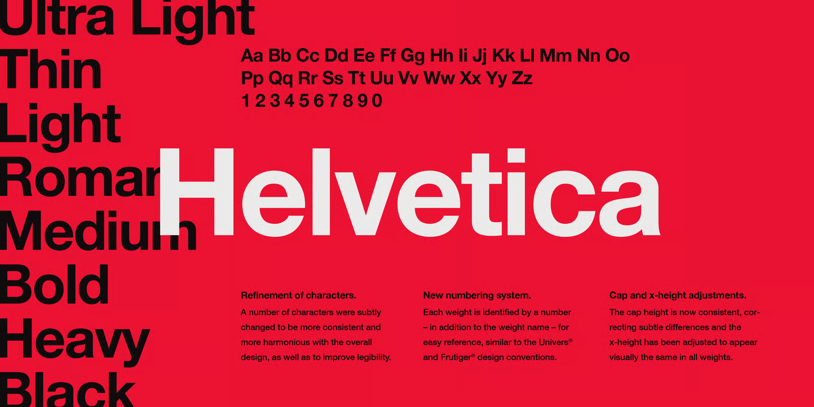

Descripción
La Helvética ha demostrado a lo largo del tiempo ser el comunicador tipográfico perfecto: sin adornos, sin emoción, sólo una presentación clara de la información. Aunque se ha actualizado y reinventado varias veces, la Helvética sigue siendo una de las fuentes sin gracias más vendidas.
Su estilo minimalista y neutro le ha permitido formar parte de la identidad visual de diferentes marcas globales.
Características
- Helvetica contiene 36 estilos y opciones de paquete familiar.
- Forma parte del branding y de la identidad visual de grandes marcas, como BMW, Panasonic, Lufthansa, Jeep o American Airlines, por su estilo moderno y atemporal.
Contexto
Lanzada por primera vez como Neue Haas Grotesk en 1957, Linotype la rebautizó en 1960 como "Helvetica" para hacerla más atractiva internacionalmente. Obtuvo una revisión en 1982 bajo el nombre de Neue Helvetica y otra en 2019 como Helvetica Now.